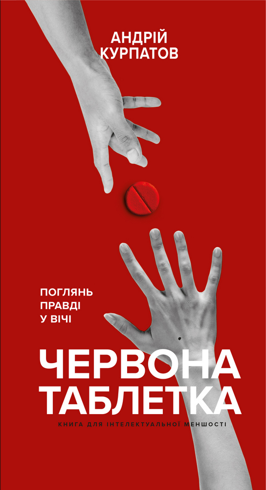

Андрій Курпатов "Червона таблетка"
"Червона таблетка" - корисне інтелектуальне чтиво для людей, які готові дивитися на наукові факти з усією серйозністю і не відвертаються від правди лише тому, що вона не лестить наше самолюбство. Важливі факти "Червона таблетка" – перша науково-популярна книга Андрія Курпатова за останні 10 років, результат великого та серйозного дослідження. Завдяки унікальному таланту автора ясно, доступно і з користю розповідати про наукові дослідження, його книги вже продані сукупним тиражем понад 5 мільйонів екземплярів та перекладені 8 іноземними мовами.
Більше